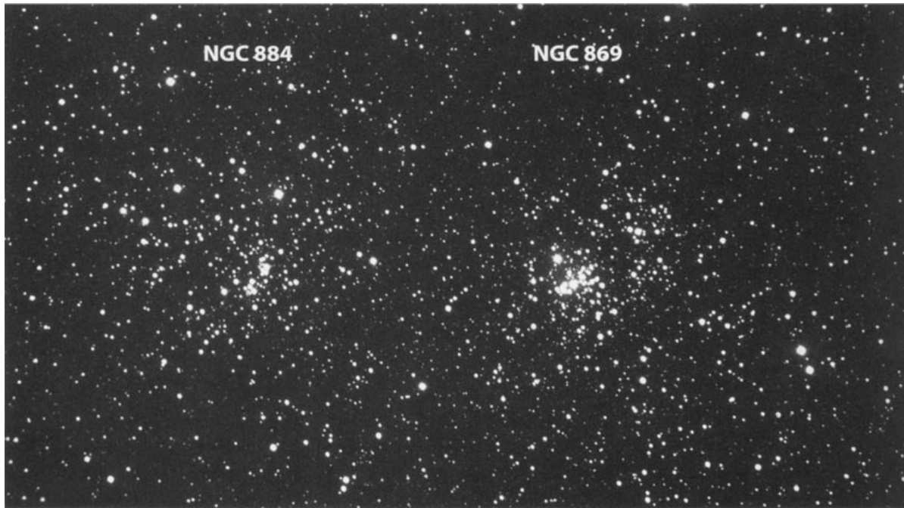

英仙座双星团 · Double Cluster (NGC 869 & NGC 884)

There is perhaps no other deep-sky object that has inspired as many spontaneous gasps from beginners as the Double Cluster in Perseus. This magnificent pairing of two open star clusters—NGC 869 and NGC 884—has captivated stargazers since antiquity, offering one of the most spectacular visual experiences available to amateur astronomers with binoculars or a wide-field telescope.
或许没有任何其他深空天体能够像英仙座双星团这样，让初学者不由自主地发出惊叹。这对壮丽的疏散星团——NGC 869与NGC 884——自远古以来便令无数观星者着迷，通过双筒望远镜或宽视场望远镜，呈现出业余天文学家所能获得的最壮观视觉体验之一。
参数总览 | Catalog Data
| 参数 Parameter | NGC 869 | NGC 884 |
|---|---|---|
| 赤经 Right Ascension | 02ʰ 19.0ᵐ | 02ʰ 22.4ᵐ |
| 赤纬 Declination | +57° 08′ | +57° 08′ |
| 目视星等 Visual Magnitude | 5.3 (5.5 O'Meara) | 6.1 (5.7 O'Meara) |
| 视直径 Apparent Diameter | 18′ | 18′ |
| 距离 Distance | 7,300 光年 | 7,300 光年 |
| 类型 Type | 疏散星团 Open Cluster | 疏散星团 Open Cluster |
| 恒星亮度范围 Star Range | 7–14 等 | 7–14 等 |
| 发现 Discovery | 自古已知 | 自古已知 |
历史记载 | Historical Records
W. Herschel observed both clusters on 1 November 1788 and recorded his impressions with characteristic precision.
W·赫歇尔于1788年11月1日观测了这两个星团，并以他特有的精确风格记录下了自己的感受。
W·赫歇尔：[1788年11月1日观测NGC 869] 一个极其美丽且明亮的星团，由众多亮星组成，结构极为密集。其中心区域存在一处空缺。（H VT-33号记录） W. Herschel: [Observed 1 November 1788] A very beautiful and brilliant cluster of [bright] stars, very rich. The middle contains a vacancy. (H VT-33)
W·赫歇尔：[1788年11月1日观测NGC 884] 一个极其美丽、耀眼的明亮恒星群，呈不规则圆形。结构极为密集，直径约半度。（赫歇尔VI-34） W. Herschel: [Observed 1 November 1788] A very beautiful, brilliant cluster of [bright] stars, irregularly round. Very rich. Near ½° in diameter. (H VI-34)
The General Catalogue (GC) and NGC descriptions further confirm the extraordinary nature of these objects.
总星表(GC)和NGC星表中的描述进一步证实了这些天体的非凡特质。
GC/NGC（描述NGC 869）：显著星团，规模极大且极为密集，成员星亮度范围从7等至14等。 GC/NGC: Remarkable cluster, very large, very rich, stars ranging from magnitude 7 to 14.
GC/NGC（描述NGC 884）：显著星团，极大且极密集，中央有一颗红宝石色恒星。 GC/NGC: Remarkable cluster, very large, very rich, ruby star in the middle.
天体写真 | The Celestial Portrait
Located in the rich star fields of Perseus, approximately 7,300 light-years from Earth, the Double Cluster consists of two distinct open clusters separated by roughly 800 light-years in depth. NGC 869, the western and slightly brighter member, contains several hundred stars packed into an area about 18 arcminutes across. NGC 884, situated to the east, mirrors its companion in size but possesses an even more striking character—a brilliant ruby-hued star burning at its heart, a red supergiant that dominates the cluster's luminous heart.
位于英仙座丰富星场中的双星团，距离地球约7,300光年，由两个深度相差约800光年的独立疏散星团组成。NGC 869作为较亮的西侧成员，在约18角分的范围内聚集了数百颗恒星。东侧的NGC 884在大小上与伙伴相当，却拥有更加引人注目的特质——一颗璀璨的红宝石色恒星燃烧于其核心，是一颗红超巨星，主导着星团光辉的中心。
Both clusters are relatively young by astronomical standards, with ages estimated at 5.6 million and 5.4 million years respectively. They are physically associated with one another, sharing a common origin in the same molecular cloud complex and moving together through space. To the naked eye, they appear as a single luminous patch in the Milky Way, but even modest optical aid reveals two distinct concentrations of starlight, each resolving into dozens of sparkling points when magnified.
从天文尺度来看，这两个星团都相对年轻，估计年龄分别为560万年和540万年。它们彼此物理相连，在同一分子云复合体中诞生，并一同穿越太空运行。肉眼观察时，它们呈现为银河中一处独立的光斑，但即使使用普通的光学设备也能揭示出两团截然不同的星光聚合，放大后每团都分解成数十颗闪耀的光点。
观测体验 | Observing Experience
There's a party going on in the sky every Christmas Eve, and it focuses on the Double Cluster in Perseus. This cheerful gathering of an imaginary celestial family is one you won't find mentioned in any previous book on star lore—it's a celestial play that captures the imagination of stargazers of all ages. When you first sweep your binoculars across this region, the effect is nothing short of breathtaking. Two dense concentrations of starlight emerge from the velvet darkness, glittering like cosmic jewels scattered across black velvet. The brighter stars of each cluster sparkle with blue-white intensity, while darker lanes of interstellar dust seem to weave between them, adding depth and mystery to the scene.
每年圣诞夜，天空中都会上演一场盛大的派对，而主角正是英仙座中的双星团。这个由虚构天体家族组成的欢乐聚会，在任何早期的星象传说书籍中都找不到相关记载——这是一场捕获各年龄段观星者想象力的天体戏剧。当您首次用双筒望远镜扫过这片区域时，效果令人屏息。两团密集的星光从丝绒般的黑暗中浮现，如宇宙宝石般在黑绒布上闪烁。每个星团中较亮的恒星闪烁着蓝白色的光芒，而星际尘埃的暗带似乎在它们之间蜿蜒，为这番景象增添了深度与神秘。
Through a moderate telescope at low power, the Double Cluster fills the field of view with such radiance that it's difficult to know where to look first. The ruby star in NGC 884 draws immediate attention—a warm, ruddy beacon amidst the cool blue-white fire of its companions. Around it, dozens of stars dance in apparent chaos, yet their gravitational dance is precisely choreographed by the gentle pull of mutual attraction. In NGC 869, the central void noted by William Herschel more than two centuries ago remains evident—a subtle darkening where stars are sparser, giving the cluster an almost hollow appearance at its core.
通过中等口径望远镜以低倍观测，双星团以如此璀璨的光芒充满视野，让人不知该先看哪里。NGC 884中那颗红宝石色的恒星立即抓住注意力——在一片冷蓝白恒星火焰中，一颗温暖的微红色信标。它周围，数十颗恒星以明显的混沌状态舞动，但它们真正的引力之舞正被相互吸引的轻柔拉扯精准编排。在NGC 869中，威廉·赫歇尔两个多世纪前记录的中央空缺依然可见——一处因恒星稀疏而形成的微妙
🔒 受限于篇幅，本文仅展示部分样章。O'Meara 先生完整的观测手记、实测数据及未公开的独家配图，请参阅原著双语典藏版。
👉 立即在闲鱼获取《DEEP-SKY COMPANIONS》中英双语高清典藏版